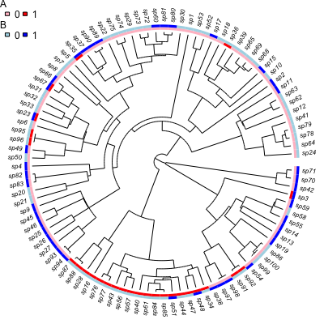
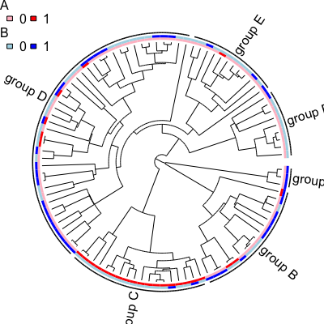

Plot a Phylogeny and Traits
Usage
trait.plot(tree, dat, cols, lab=names(cols), str=NULL, class=NULL, type="f", w=1/50, legend=length(cols) > 1, cex.lab=.5, font.lab=3, cex.legend=.75, margin=1/4, check=TRUE, quiet=FALSE, ...)
Arguments
- tree
- Phylogenetic tree, in ape format.
- dat
- A
data.frameof trait values. The row names must be the same names as the tree (tree$tip.label), and each column contains the states (0, 1, etc., orNA). The column names must give the trait names. - cols
- A list with colors. Each element corresponds to a trait
and must be named so that all names appear in
names(dat). Each of these elements is a vector of colors, with length matching the number of states for that trait. Traits will be plotted in the order given bycols. - lab
- Alternative names for the legend (perhaps longer or more
informative). Must be in the same order as
cols. - str
- Strings used for the states in the legend. If
NULL(the default), the values indatare used. - class
- A vector along
phy$tip.labelgiving a higher level classification (e.g., genus or family). No checking is done to ensure that such classifications are not polyphyletic. - type
- Plot type (same as
typein?plot.phylo). Currently onlyf(fan) andp(rightwards phylogram) are implemented. - w
- Width of the trait plot, as a fraction of the tree depth.
- legend
- Logical: should a legend be plotted?
- cex.lab, font.lab
- Font size and type for the tip labels.
- cex.legend
- Font size for the legend.
- margin
- How much space, relative to the total tree depth, should be reserved when plotting a higher level classification.
- check
- When TRUE (by default), this will check that the classes
specified by
classare monophyletic. If not, classes will be concatenated and a warning raised. - quiet
- When TRUE (FALSE by default), this suppresses the warning
caused by
check=TRUE. - ...
- Additional arguments passed through to phylogeny plotting
code (similar to
ape'splot.phylo).
Description
Plot a phylogeny and label the tips with traits. This function is experimental, and may change soon. Currently it can handle discrete-valued traits and two basic tree shapes.
Examples
## These are the parameters: they are a single speciation and extinction ## rate, then 0->1 (trait A), 1->0 (A), 0->1 (B) and 1->0 (B). colnames(musse.multitrait.translate(2, depth=0))[1] "lambda0" "mu0" "qA01.0" "qA10.0" "qB01.0" "qB10.0"## Simulate a tree where trait A changes slowly and B changes rapidly. set.seed(1) phy <- tree.musse.multitrait(c(.1, 0, .01, .01, .05, .05), n.trait=2, depth=0, max.taxa=100, x0=c(0,0)) ## Here is the matrix of tip states (each row is a species, each column ## is a trait). head(phy$tip.state)A B sp1 0 0 sp2 0 1 sp3 1 1 sp4 0 1 sp5 0 0 sp6 0 0trait.plot(phy, phy$tip.state, cols=list(A=c("pink", "red"), B=c("lightblue", "blue")))Warning message: Name partially matched in data frame Warning message: Name partially matched in data frame
nodes <- c("nd5", "nd4", "nd7", "nd11", "nd10", "nd8") grp <- lapply(nodes, get.descendants, phy, tips.only=TRUE) class <- rep(NA, 100) for ( i in seq_along(grp) ) class[grp[[i]]] <- paste("group", LETTERS[i]) ## Now, 'class' is a vector along phy$tip.label indicating which of six ## groups each species belongs. ## Plotting the phylogeny with these groups: trait.plot(phy, phy$tip.state, cols=list(A=c("pink", "red"), B=c("lightblue", "blue")), class=class, font=1, cex.lab=1, cex.legend=1)Warning message: Name partially matched in data frame Warning message: Name partially matched in data frame
## Add another state, showing values 1:3, names, and trait ordering. tmp <- sim.character(phy, c(-.1, .05, .05, .05, -.1, .05, .05, 0.05, -.1), model="mkn", x0=1) phy$tip.state <- data.frame(phy$tip.state, C=tmp) trait.plot(phy, phy$tip.state, cols=list(C=c("palegreen", "green3", "darkgreen"), A=c("pink", "red"), B=c("lightblue", "blue")), lab=c("Animal", "Vegetable", "Mineral"), str=list(c("crane", "toad", "snail"), c("kale", "carrot"), c("calcite", "beryl")))Warning message: Name partially matched in data frame Warning message: Name partially matched in data frame Warning message: Name partially matched in data frame
## Rectangular/phylogram plot with groups. trait.plot(ladderize(phy, right=FALSE), phy$tip.state, type="p", cols=list(A=c("pink", "red"), B=c("lightblue", "blue"), C=c("palegreen", "green3", "darkgreen")), class=class, font=1, cex.lab=1)